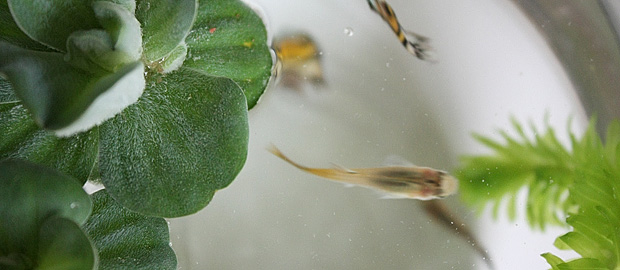

满架子花花草草最后只剩下绿萝和铜钱草， 空花盆也变得越来越多。 想想自己以后还是不要养难度系数高的植物了吧，养那些最便宜也最好活的，像绿萝这样，不怎么管它也长得好好的。 那盆小小的猪笼草，从买的那天起就从来没吃过虫子，完全颠覆了我心里对猪笼草的期待。因为是热带雨林植物，喜欢高温潮湿的坏境，但北京又总是太干，于是每天洗澡的时候都会把花盆抱进浴室，一起淋浴，所以每天笼子里的水都不少，可即使是这样的努力，还是不能挽救它的持续枯萎，终于有天连叶子也一起枯掉了。 在它之前，那盆最高的白掌也已经蔫了，大酒杯样的花瓶被我拿来水培绿萝。铜钱草在经历一次分栽后，差点也快不行了，还好及时转移到了窗台上，那里在每天早上有那么一两个小时能晒到太阳，结果两盆铜钱草就都向着阳光的方向努力生长着。
以前放铜钱草的小水缸养了几尾小鱼，叫孔雀鱼，一天到晚总是很生猛地游来游去，只要有光线，就一刻不停。晚上回家刚开灯的时候，会发现它们大都沉在水底一动不动，一定是睡着了，但因为光线的缘故，过不了一会又开始兴奋地游起来，直到我们睡觉，都还在游。这些可怜的小鱼完全被我们搞乱了生物钟，城市生活让它们再也回不到日出而作日落而息的日子。醒着的时候总是漫无目的，躁动不安，到处寻觅食物的踪迹。一旦有人影靠近，就全都聚过来，以为又有吃的了，好像从来也不会觉得饱，之前饿了它们一天，就发现水草也被当作了食物，还真是饥不择食呢。